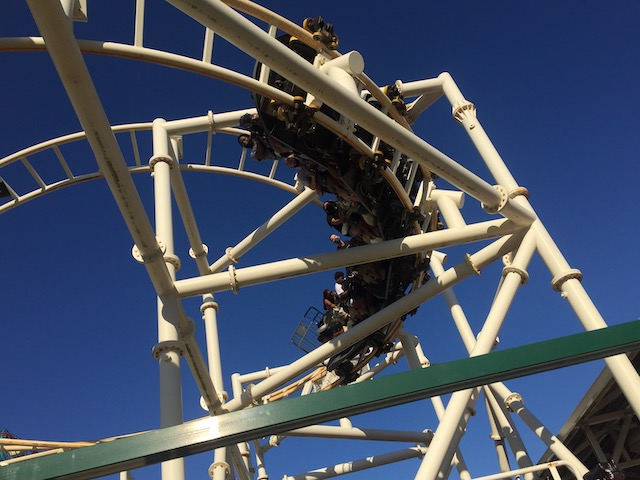
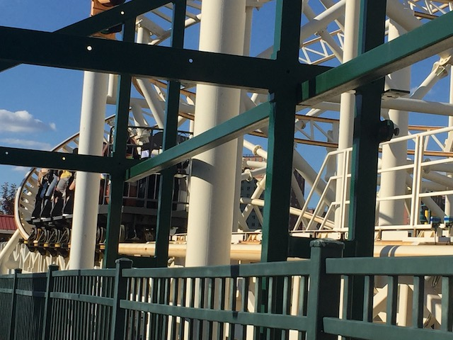
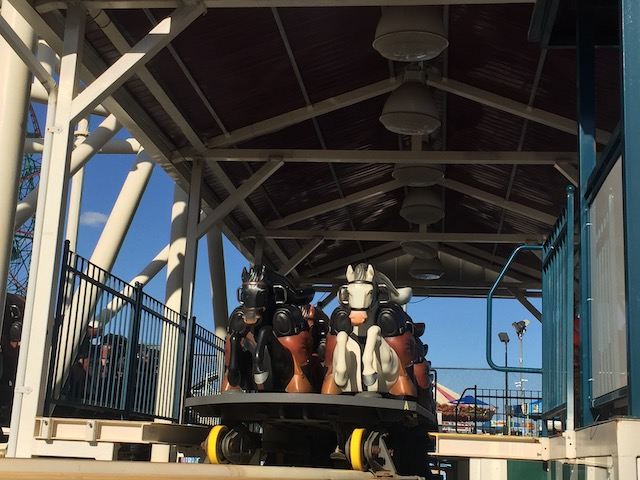
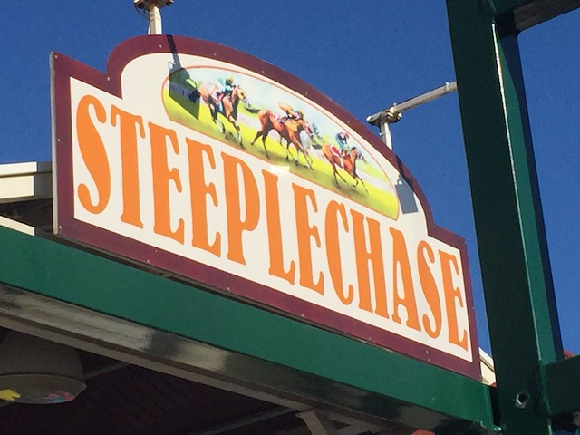
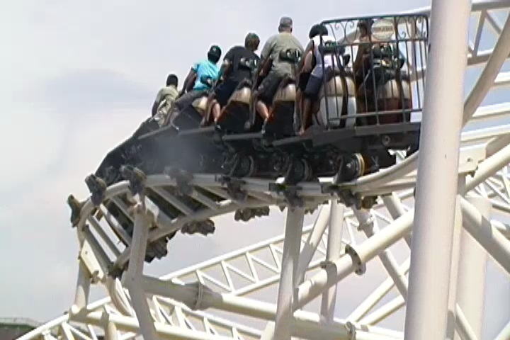
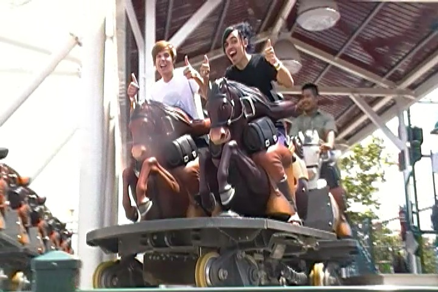
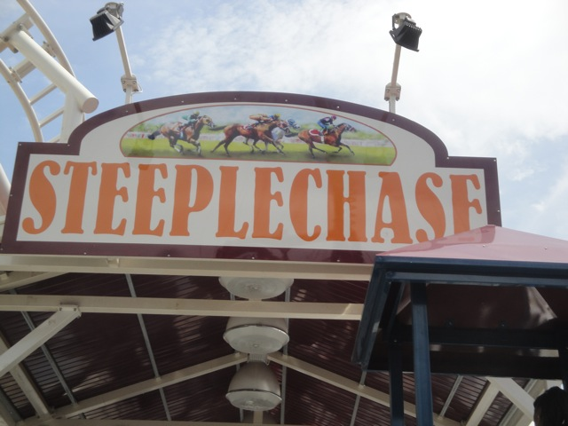

| |
Steeplechase Review

We're here at Coney Island. More specifically, the Scream Zone park run by Zamperla within Coney Island, but come on. It's all Coney Island. Today's ride we'll be reviewing for you is Steeplechase, which is another one of those Zamperla Motorbike Coasters. This one is the typical clone that appears at the majority of parks. I'm just not used to it thanks to Pony Express. However, good news. This ride is MUCH better than Pony Express (Wait. What the f*ck am I talking about!? PONY EXPRESS IS THE BEST RIDE EVER!!!). First you climb onto the plastic horse. Here's a tip of advice. If you don't want to be stapled, DON'T LEAN DOWN ON THE HORSE!!! LEAVE SOME ROOM BETWEEN YOU AND THE HORSE!!! Once the back part comes on your back, it's not going to feel good if you put all your weight on the front part. We roll out to the launch pad, and then here we go. LAUNCH!!! I'm not sure if this ride is even any faster than Pony Express, but it certainly FEELS like it. Now granted, this is not by any means a powerful launch. It's definetly one of the weaker launches out there, but compared to Pony Express, which IS the weakest launch to date, it feels fast. We then rise up a big curved turn that seems to get rid of most of our speed. But hey, at least we're up in the air now. Plus there's all this twisty track in front of us with a great view of Coney Island and the Atlantic Ocean. I'm happy. And this is just the beginning of the ride. We go through a banked turn. Nothing special, but at least we're still high up. We then go through a twisty bit and WHOA!!! We get some laterals here. Holy Crap!!! Laterals here have this funny feeling thanks to the open nature of the seats. It's hard to explain. It's just something that feels really cool. We go through another curve in the air. Again, its got some laterals that really gives us some whip. Since there are no sides, you can really feel this thing and almost feel like you're about to fall out. And it starts to get repetitive from here. Teeny bit of straight track to a tight turn. Another fun twisty bit afterwards with more cool laterals that leads us straight into a tight turn. This tight turn leads us into a turn drop combo, since we are gradually making our way to the ground, and gaining speed while doing so. It's a fun experience. And we're really going fast now, dipping down to the ground and going around another tight curve. But unfortunetly, that leads us straight to the end. We hit the brake runs here. It's longer than Pony Express, but in general, these rides aren't very long. But it is a really fun little ride. Again, just like its neighbor, also from Zampera, in the Scream Zone park, Steeplechase is a fun little ride, but it's kind of repetitive. Just turns and twisty bits. That's it. Just launch, rise up, and twist your way down to the ground. But I'm not here to complain. I do find it to be a very fun and enjoyable ride.
6/10
Location: Coney Island
Opened: 2011
Built by: Zamperla
Last Ridden: June 16, 2021
I have ridden this exact same ride at the following parks.
Särkänniemi
Steeplechase Photos






Home
|